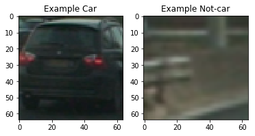
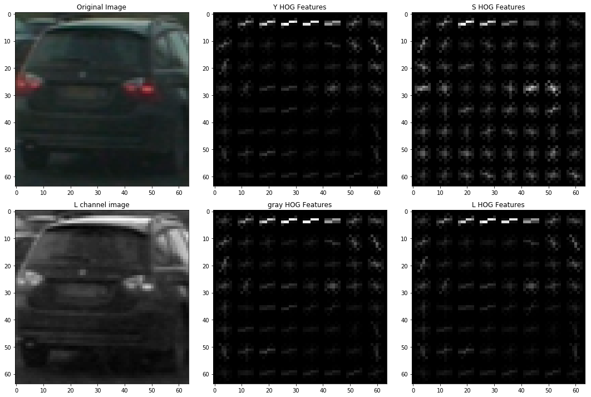
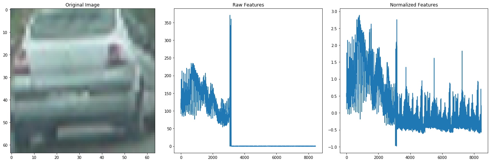
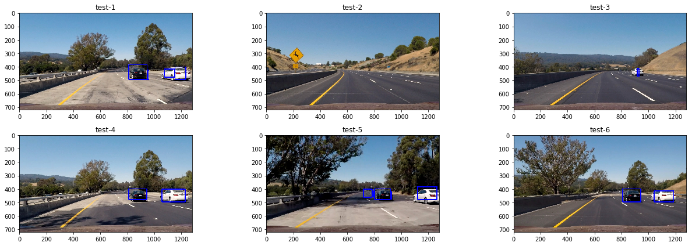
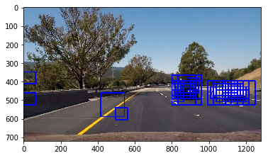
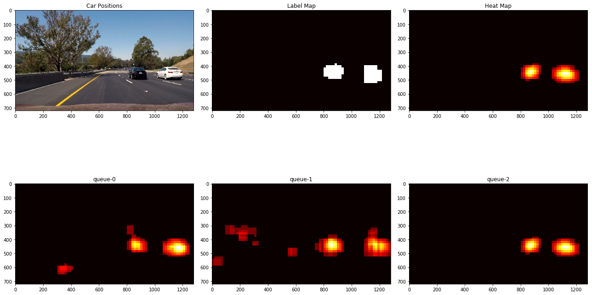

The goals / steps of this project are the following:
I have put everything in one notebook Project5_vehicle_detection_12-31-17. The code for this step is contained in function called extract_HOG_features ,where functionget_HOG_features is called for each image.
I started by reading in all the vehicle and non-vehicle images. Here is an example of one of each of the vehicle and non-vehicle classes:

In addition to HOG features, I also used sptial bin of RGB channels and histogram in functionextract_spatial_features. Functions spatial_bin and color_hist in the code are built for sptial bin and pixel histogram feature. I then explored different color spaces and different parameters (orientations, pixels_per_cell, and cells_per_block). I grabbed random images from each of the two classes and displayed them to get a feel for what the HOG output looks like.
Here is an example using the YCrCb color space and HOG parameters of orientations=9, pixels_per_cell=(8, 8) and cells_per_block=(2, 2):

After comparing the result of the HOG feature from different channels. I narrowed down to a few candidate including YCrCb and HLS, and the orientation and pixels per cell, cell per block remain at 9, (8,8), 2. The final decision is made after training the SVM with each combined features and parameters. HOG from YCrCb channel gave the highest accuracy at 0.9893. And the false positive is minimal in later test on images.
I trained a linear SVM using combination of RGB spatial bin, histogram, and YCrCb HOG features. It is critical to normalize the data. Note that without normalizing the data, the training model will still yield an apparently OK number of model accuracy. But in reality will cause a lot of false positives (cars flowing everywhere!). The normalization is shown in the following:

Sliding window search is implemented in function slide_window(). I decided to not limit search in x-direction, which is mostly fine. But for y direction I cropped out the hood and sky to accerlerate the processing. The scales are tested and carefully chosen depending on if the searched region is far or near (scale ratio searched ranging from 0.5-4 given the realistic sizes of cars in images scale scale =1 for 64 pixels). I found xy_overlap=(0.5, 0.5) is reasonable, and the use of different scales will to some extent cover the missing information due to samll overlap or big stride.
Ultimately I searched on a combination of 3-4 scales (depending on whether the search is at the far or near region) using YCrCb 3-channel HOG features plus spatially binned color and histograms of color in the feature vector, which provided a nice result. Here are some example images:

Please find my video in the submission.
I recorded the positions of positive detections in each frame of the video. As the following figure indicates, there are lots of false positives. From the positive detections I created a heatmap and then thresholded that map to identify vehicle positions. Since I used mutliple scales, my threshold is higher than just 1 or 0. I then used scipy.ndimage.measurements.label() to identify individual blobs in the heatmap. I then assumed each blob corresponded to a vehicle. I constructed bounding boxes to cover the area of each blob detected. For single image detection, I found that threhold = 5 or 6 is sufficient. For video, I intentionally lowered the threshold to 3-4 but rely on the history data to serve as a filter.

Here's an example result showing the heatmap from a 3 images, the result of labeled points then overlaid on the next images.It is clearly showing that false positives are effectively filtered by considering the detection in the history. This is a straightfoward but a little bit rough approach. Another way is to keep the highlighted box from earlier frames and average them.

I feel like the project is a manual way of implementating CNN, and used human's knowledge to narrow down the good effective features in stead of letting the model to learn the features from the time/energy consuming training. My pipeline may have trouble if there are cars coming from the opposite side of road. If the lane lines are filled with cars bumper to bumper, like what big cities are used to, the detections just all merge and I will see a big blue box, not very informative... And when the car is not of a regular shape (tractors or motorcycles), the model will have difficulty.